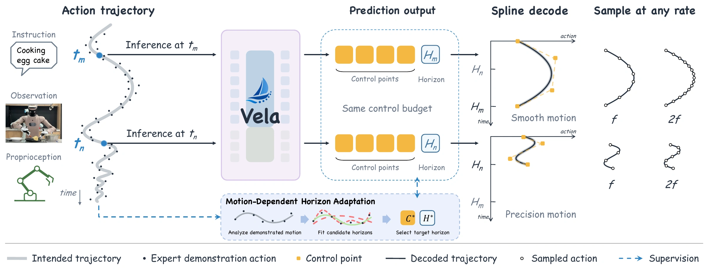
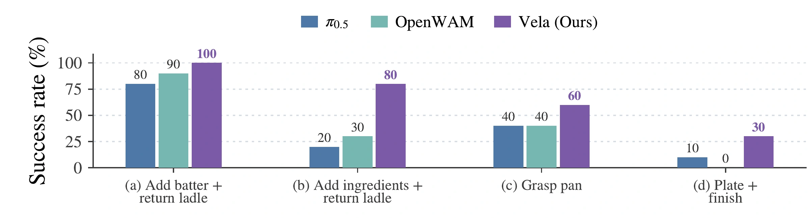
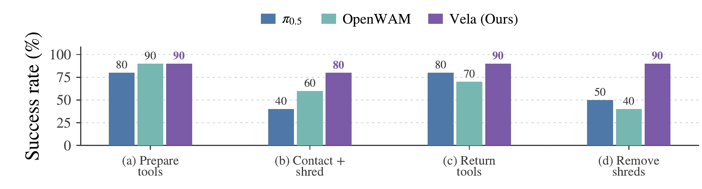
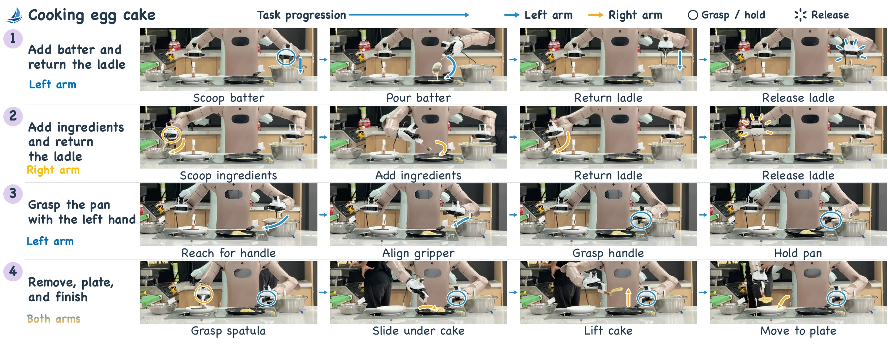
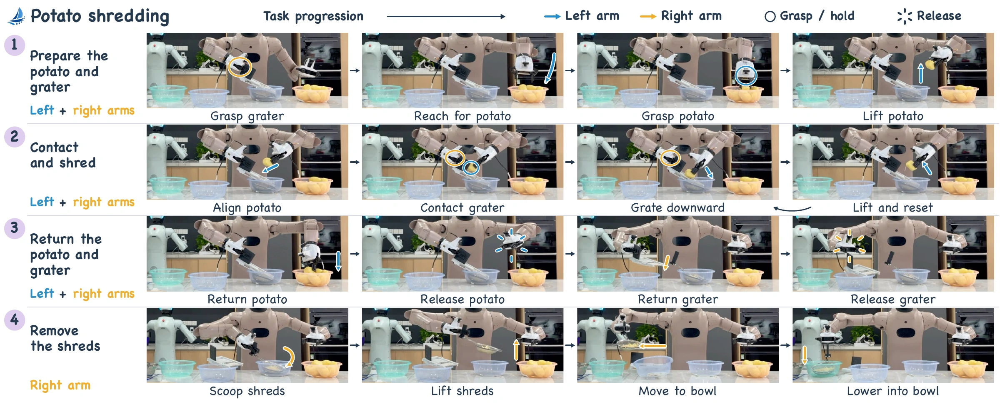
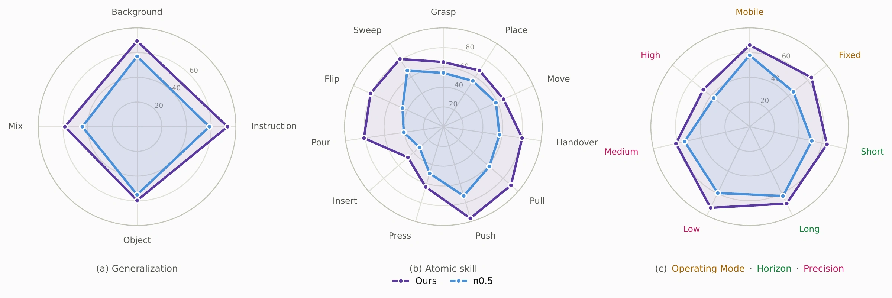
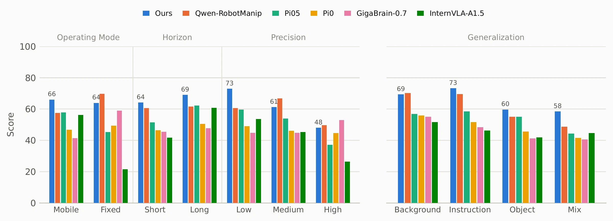

Cooking egg cake
1:29Tool use and coordinated bimanual manipulation across four stages.
Tool use and coordinated bimanual manipulation across four stages.
Sustained contact and precise coordination between the potato and grater.
The idea
Vela predicts a compact curve and its temporal span.
The same control-point budget covers long, smooth motions or shorter, finely resolved movements.

A compact set of spline control points defines a continuous action trajectory.
A motion-dependent horizon adapts the temporal span to smooth or precise movements.
A shared action interface supports learning across heterogeneous robot embodiments.
Pretrained in trajectory space on approximately 40,000 hours of public and private robot data.
Evaluation
From real-world bimanual manipulation to diverse simulation benchmarks.
Mean subtask success rate · four stages · 10 trials per stage




LIBERO-X and EBench
Vela retains the same architecture, trainable parameter count, and input modalities as π0.5, changing the output modeling space to action curves. Benchmark post-training follows the official π0.5 recipes.
Average success rate
Overall success rate
Gains are absolute percentage-point improvements over π0.5. Results follow the manuscript’s evaluation protocols.
| Model | L1 | L2 | L3 | L4 | L5 | Avg. |
|---|---|---|---|---|---|---|
| OpenVLA-OFT | 29.0 | 17.6 | 8.8 | 6.4 | 4.2 | 13.2 |
| π0 | 29.4 | 21.9 | 11.0 | 7.6 | 5.1 | 15.0 |
| X-VLA | 30.1 | 22.6 | 10.3 | 6.0 | 4.1 | 14.6 |
| OpenWAM-α | 35.9 | 28.2 | 21.6 | 13.0 | 10.0 | 21.7 |
| GR00T N1.5 | 43.3 | 32.9 | 18.7 | 13.3 | 9.7 | 23.6 |
| τ0-VLA | 46.5 | 34.2 | 20.5 | 13.0 | 10.5 | 24.9 |
| Xiaomi-R0 | 71.4 | 49.6 | 33.7 | 22.1 | 17.2 | 38.8 |
| π0.5 | 65.2 | 53.2 | 36.0 | 24.1 | 18.0 | 39.3 |
| π0.5-Vela | 66.1 | 53.5 | 40.7 | 27.3 | 22.5 | 42.0 |
| Vela | 67.2 | 55.9 | 44.9 | 31.5 | 27.1 | 45.3 |
| Model | Tabletop | Pick & place | Long horizon | Overall | ||||
|---|---|---|---|---|---|---|---|---|
| SR | Score | SR | Score | SR | Score | SR | Score | |
| X-VLA | 8.6 | 24 | 50.0 | 54 | 6.2 | 25 | 23.7 | 36 |
| InternVLA-A1 | 4.3 | 11 | 43.0 | 47 | 17.9 | 46 | 23.9 | 36 |
| FastWAM | 2.9 | 13 | 49.5 | 53 | 16.9 | 38 | 25.6 | 37 |
| Cosmos3-Edge | 18.6 | 32 | 41.5 | 44 | 24.1 | 49 | 29.3 | 42 |
| GigaBrain-0.7 | 37.9 | 59 | 42.0 | 45 | 20.0 | 37 | 33.3 | 46 |
| π0 | 32.9 | 49 | 41.5 | 45 | 25.7 | 49 | 33.7 | 47 |
| InternVLA-A1.5 | 12.1 | 22 | 50.0 | 53 | 33.7 | 59 | 34.2 | 46 |
| Qwen-RobotManip | 50.0 | 70 | 56.5 | 60 | 29.9 | 55 | 45.6 | 60 |
| π0.5 | 29.3 | 45 | 56.5 | 61 | 34.1 | 55 | 41.4 | 54 |
| π0.5-Vela | 34.3 | 54 | 59.0 | 63 | 28.5 | 55 | 42.0 | 58 |
| Vela | 44.3 | 64 | 63.0 | 67 | 39.1 | 65 | 49.7 | 66 |
π0.5-Vela is initialized from the π0.5 checkpoint and post-trained in trajectory space; Vela is pretrained directly in trajectory space.

Task-progress Score (%) on EBench.

@misc{li2026vela,
title = {Vela: Scaling Vision-Language-Action Models with Compact Action Curve Parametrization},
author = {Yifan Li and Jiaxu Wang and Dongming Wu and Yicheng Jiang and Ryan Ji and Xiangyu Yue and Yanwei Fu},
year = {2026}
}Predict the shape of a motion and how far it extends in time. Conditioned on the robot context, Vela jointly predicts a compact set of cubic B-spline control points and a motion-dependent horizon. The control points describe the trajectory’s geometry; the horizon maps that curve onto the future action timeline.
Fixed representation, adaptive temporal support. The same control-point budget can cover a longer interval for smooth reaching or transport, or a shorter interval for contact, alignment, and rapid corrections. During training, Vela selects a candidate horizon that represents each demonstrated motion adequately under a noise-normalized fitting criterion. At deployment, the policy predicts both quantities directly—no curve fitting or horizon search is needed.
One curve, flexible sampling. The continuous trajectory can be queried at different temporal resolutions without changing its predicted representation. A shared action interface enables this trajectory-space modeling across heterogeneous robot embodiments.
EBench task-progress Score (%).
(a) Generalization: background, instruction, object, and mixed distribution shifts. (b) Atomic skills: constituent actions such as grasping, placing, and inserting. (c) Control demands: operating mode (mobile or fixed-base), temporal horizon (short or long), and precision (low, medium, or high).
Vela improves across the displayed categories, indicating gains that extend beyond a single task family.